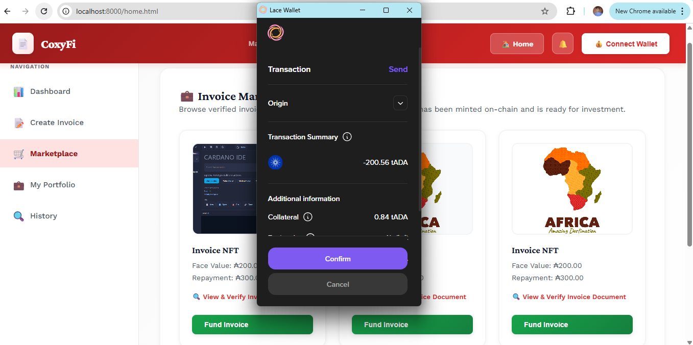

Coxyfi Manual
💸 Fund an Invoice
Investors use the Available Invoices list to review open invoice opportunities and fund one by one directly from the dashboard.
Before Funding
- Read the face value and repayment amount shown on the invoice card.
- Open the linked invoice document or preview image if provided.
- Make sure your wallet holds enough ADA for the funding amount and transaction fee.
Screenshot Placeholder

Suggested image: invoice marketplace cards
Funding Steps
- Click Fund Invoice on the chosen card.
- Review the wallet prompt and confirm the transaction.
- Wait for the status panel to confirm funding.
- After funding, the invoice should disappear from the Available Invoices section and move into the issuer repayment workflow.
Only fund after reviewing the invoice details carefully. Once submitted, the funding action is an on-chain transaction and cannot be reversed by refreshing the page.